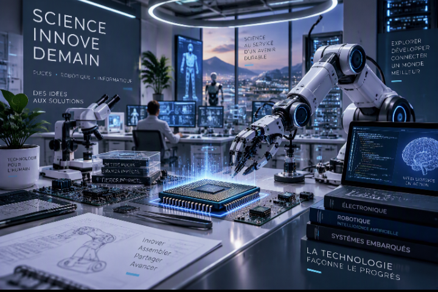

La transformation technologique du monde : progrès, puissance et conséquences
Intelligence artificielle, robotique, biotechnologies, énergie et technologies spatiales : une analyse des transformations en cours, de leurs effets économiques et des enjeux stratégiques mondiaux.
Lire l'article →